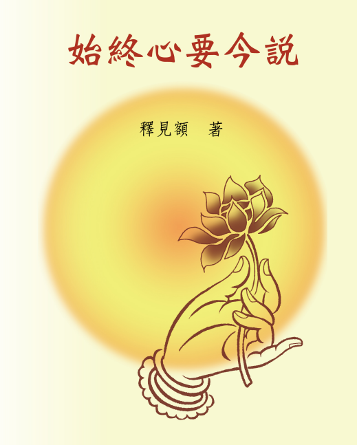

Free from Attachment, Free from Fear

見額法師《不在乎不要怕》英文版。Kindle (USD 5.99) 購買連結更新中，平裝 (NTD 250) 請於 LINE 官方帳號留言。
Encounters with Chan（禪會：八高僧故事圖卷）
The handscroll Tales of the Eight Eminent Monks … 歡迎下載
始終心要今說

天台教觀堂奧，觀行法門落實日常，活出法味。
見額法師《不在乎不要怕》英文版。Kindle (USD 5.99) 購買連結更新中，平裝 (NTD 250) 請於 LINE 官方帳號留言。
The handscroll Tales of the Eight Eminent Monks … 歡迎下載

天台教觀堂奧，觀行法門落實日常，活出法味。